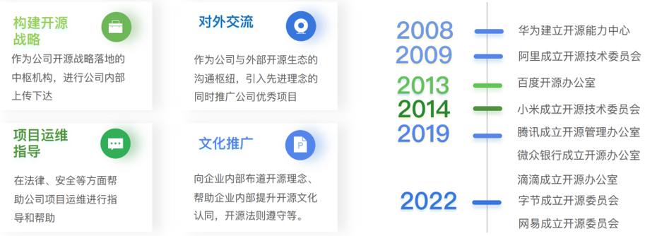

开源治理与OSPO
企业为什么要制定开源战略规划？

企业开源战略四大关注点

- 寻求参与的开源项目
- 希望密切联系的相关开源项目社区
- 开源治理的有效性
- 企业文化的开放性
实施企业开源治理的基础架构

开源战略需要构建基础架构来支持开源工程工作。 基础架构需要支持的四个关键支柱：
- 社区参与
- 开源贡献
- 开源合规性
- 开源消费
开源社区是唯一的项目治理平台，因为它涉及公司与公司所涉及的特定开源项目之间在使用、合规性和贡献方面的所有交互。
开源消费与合规的基础设施

开源贡献基础设施

设立 OSPO——建立组织层面开源战略的抓手
OSPO（Open Source Program Office）即开源项目办公室，最早成立的公司为谷歌，成立于 2004 。此后，微软、Adobe、Netflix、Intel 等科技公司纷纷跟进成立企业 OSPO。OSPO 是企业实施开源战略的有效抓手，2013 年起中国企业也陆续开始组织建立自己的开源项目办公室。
企业开源的组织架构设置：开源项目办公室
开源项目办公室是什么？
在公司内部支持、培养、共享、解释和发展开源的组织架构；企业可以明确地建立和执行开源战略，为他们的领导者、开发人员、营销人员和其他员工提供他们需要的工具，使开源在运营中取得成功。
为什么需要开源项目办公室？
- 开源是一项战略优势，需要协调，集中和清晰的沟通，没有管理过程将会产生混乱和风险;
- 为了真正从开源中受益，需要透明和协作的文化。
开源项目办公室的职责
- 在公司内外沟通开源战略，监督战略的执行；
- 在商业产品和服务中促进开源的有效使用；
- 确保高质量和频繁地向开源社区发布代码；
- 与开发人员交流，使公司做出有效开源贡献；
- 在组织中培养开源文化；
- 维护开源许可的遵从性审查和监督。
开源项目办公室架构
- 取决于公司的主要业务和开源策略，它们可以位于首席技术官办公室等地方：
- 法律：开发人员可以就出现的问题与法律团队紧密合作。
- 工程：直接将精力集中在使开发人员的工作更加有效和富有成效上；
- 开发者关系/营销：使用开源来收集旨在销售使用开源构建的产品的销售线索。
企业实施开源战略的策略与回报
5C 策略原则：
- 消费（Consumption）
- 合规性（Compliance）
- 社区（Community）
- 贡献（Contribution）
- 竞争（Competition）
开源项目办公室收益
- 提高开发人员的敏捷性/速度
- 更好更快地遵守许可证
- 在开源之上建立差异化
开源作为营销策略
开源不仅仅是对源代码和口碑的共享，也是最佳的产品营销策略
开源的回报是获得竞争优势
哈佛商学院（Harvard Business School）的近期研究表明，开源贡献公司从开源中获取的生产价值比不回馈开源的公司高出100％。